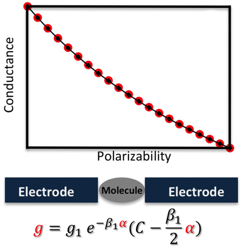

About Me
I'm Shobeir Seddington ( Éo äÀàb…™r Ààs…õd…™≈ãt…ôn)
As a highly skilled data science professional with over a decade of experience, I have led teams and driven impactful results across various industries. Currently, I serve as the Director of Data Science and Personalization at CVS Health, where I built a team to tackle personalization for over 2.5 billion visitors and established a test-and-learn culture. I am also a Harvard Business Review Advisor, contributing my expertise to their Advisory Council.
In my previous role at GoPuff, I led a team of data scientists as the Principal Data Scientist and developed their experimentation program. I have also mentored PhDs in transitioning to data science careers as the Lead Program Developer at Cheeky Scientist's Data Science Syndicate.
At Aetna, a CVS Health Company, I held multiple positions, including Senior Manager of Data Science, where I worked closely with healthcare startups and led a large team of data scientists. I won CVS's venture competition as part of the Signal team, leveraging state-of-the-art NLP and speech recognition algorithms.
Before Aetna, I worked as a Data Scientist at Verra Mobility, where I optimized program deployment and identified new growth opportunities. I have also served as an Instructor at Arizona State University, where I optimized administrative processes and conducted studies to predict academic success.
Feel free to reach out if you want to chat about data science, healthcare, or anything else!
Blog
Check my Blog where I write about data science and personal musings.
Select Publications
 Google Scholar: Google Scholar
Google Scholar: Google Scholar-
AstroPaint: A Python Package for Painting Halo Catalogs into Celestial Maps
AstroPaint is a Python package designed to generate and visualize sky maps of various astrophysical signals from dark matter halos and their host gas. It produces whole-sky mock maps at desired resolutions using input halo catalogs and astrophysical effect profiles. With its Object-Oriented, parallel design, AstroPaint offers tools for catalog filtering, map manipulation, and cutout stacking, allowing easy scalability for high-resolution maps and large catalogs. Although primarily developed for galaxy cluster signals, its applications extend to halos of any size or point sources.
-
 A Nickel Phosphine Complex as a Fast and Efficient Hydrogen Production Catalyst
A Nickel Phosphine Complex as a Fast and Efficient Hydrogen Production Catalyst
The research focuses on creating a cost-effective and environmentally friendly alternative to traditional noble-metal-based catalysts. The nickel phosphine complex exhibits fast and efficient catalytic activity for hydrogen production, demonstrating its potential as a promising alternative in sustainable energy applications. The study highlights the importance of exploring non-noble metal-based catalysts for hydrogen production, paving the way for more sustainable and economical energy solutions.
-
 Polarizability as a Molecular Descriptor for Conductance in Organic Molecular Circuits
This study explores the connection between molecular polarizability and conductance in electrified molecular interfaces. Results show that for a family of structurally connected molecules, conductance decreases as polarizability increases. This supports the idea that a molecule in a junction acts as a dielectric, polarized by the applied bias, creating a barrier that hinders tunneling. Using polarizability as a descriptor offers advantages over a molecular orbitals-based picture. The research uses Simmons' tunneling model, incorporating image charge and dielectric effects, to represent the molecular junction. Despite its simplicity, this model reveals a previously overlooked connection and encourages further investigation.
Contact Information
 Email: shobmaz@gmail.com
Email: shobmaz@gmail.com
 LinkedIn: www.linkedin.com/in/shobeir-seddington
LinkedIn: www.linkedin.com/in/shobeir-seddington
 GitHub: github.com/S-KSM
GitHub: github.com/S-KSM